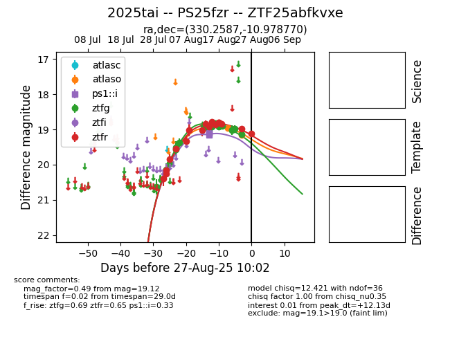

Target 2025tai at 2025-08-26 19:22, see:
FINK: fink-portal.org/ZTF25abfkvxe
Lasair: lasair-ztf.lsst.ac.uk/objects/ZTF25abfkvxe
ALeRCE: alerce.online/object/ZTF25abfkvxe
TNS: wis-tns.org/object/2025tai
YSE: ziggy.ucolick.org/yse/transient_detail/2025tai
alt names
ZTF25abfkvxe (ztf,fink)
2025tai (tns,yse)
PS25fzr (panstarrs)
coordinates:
equatorial (ra, dec) = (330.2587,-10.97877)
galactic (l, b) = (46.4707,-46.88299)
photometry
last atlaso=19.15, ps1::i=19.16, ztfg=19.13, ztfr=18.98
2 atlaso, 4 ps1::i, 17 ztfg, 17 ztfr detections
